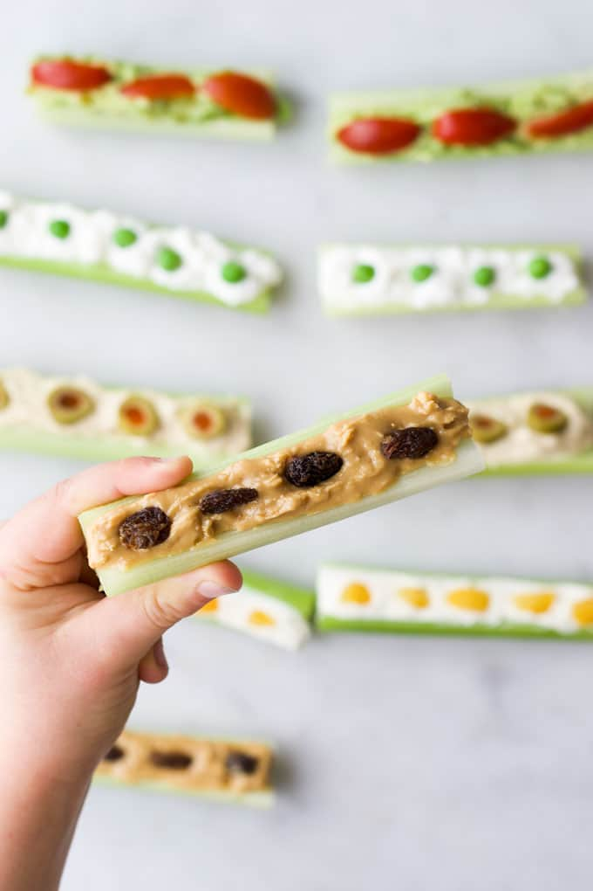

Ants on a Log

TEACHING KIDS THROUGH PREPARING SNACKS
Getting kids to help prepare healthy snacks, not only encourages them to be more adventurous eaters but can help young kids develop their fine motor skills, math skills, language skills and so much more.
Ingredients
- 3 celery sticks
- 1/4 cup peanut butter
- 30 raisins
Instructions
- Wash the celery sticks and cut each stick in half.
- Add peanut butter into the concave part of each celery stick and spread.
- Push raisins into the peanut butter to represent “ants”.